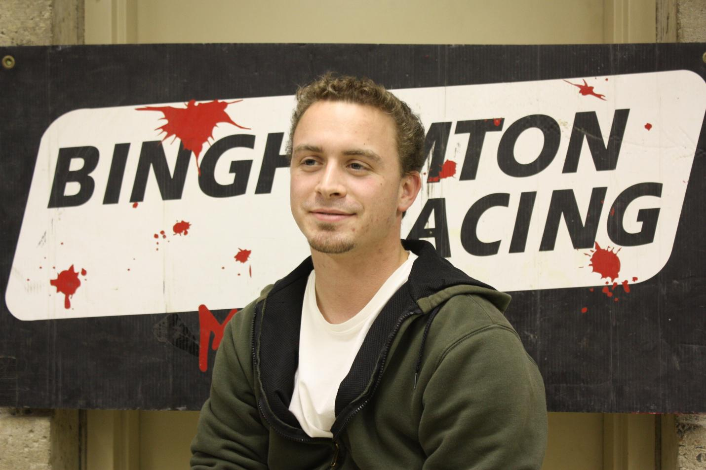
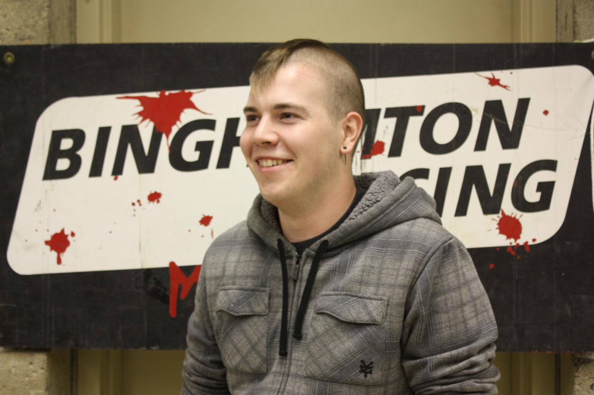
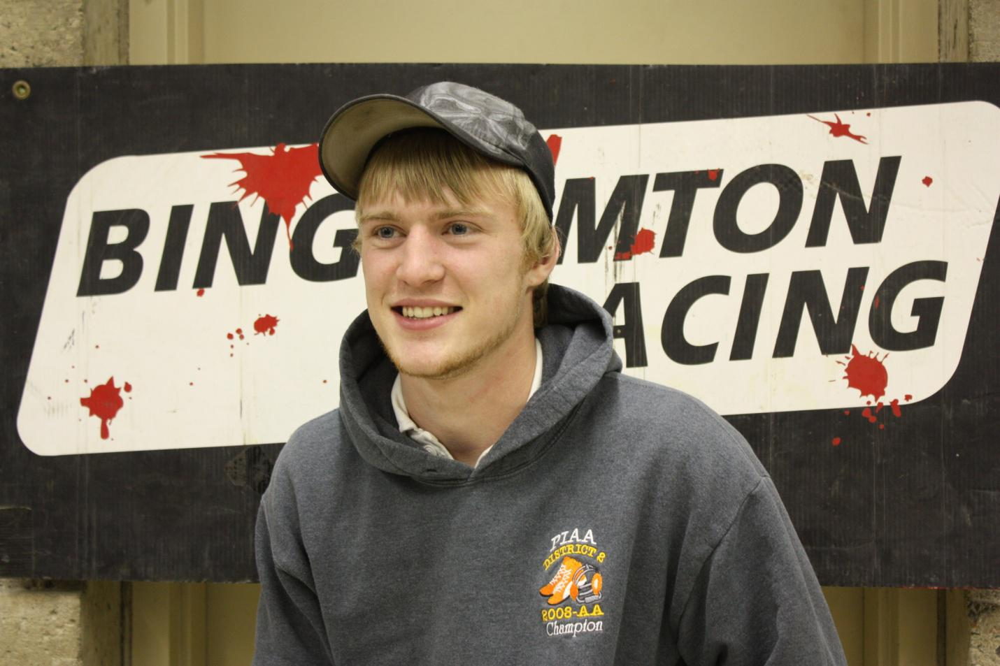
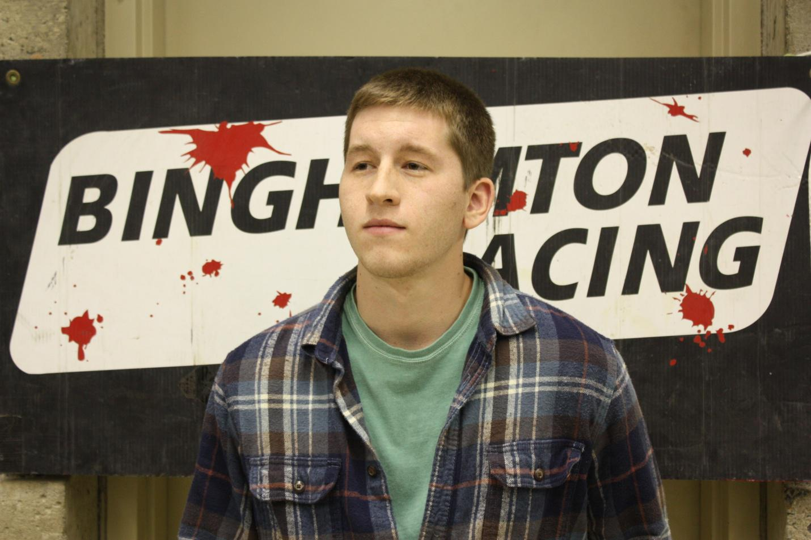
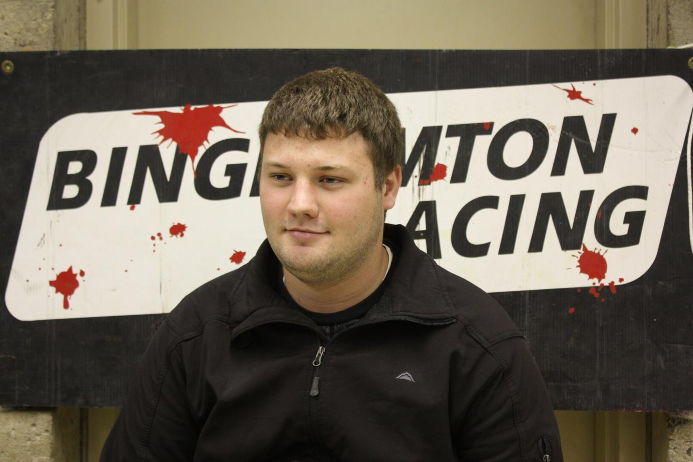
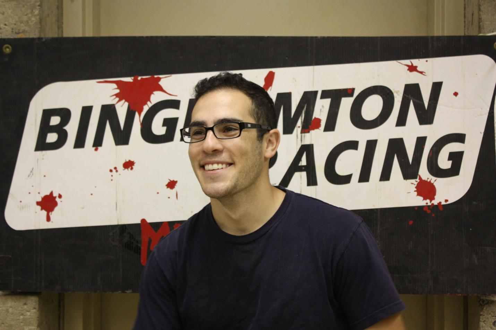
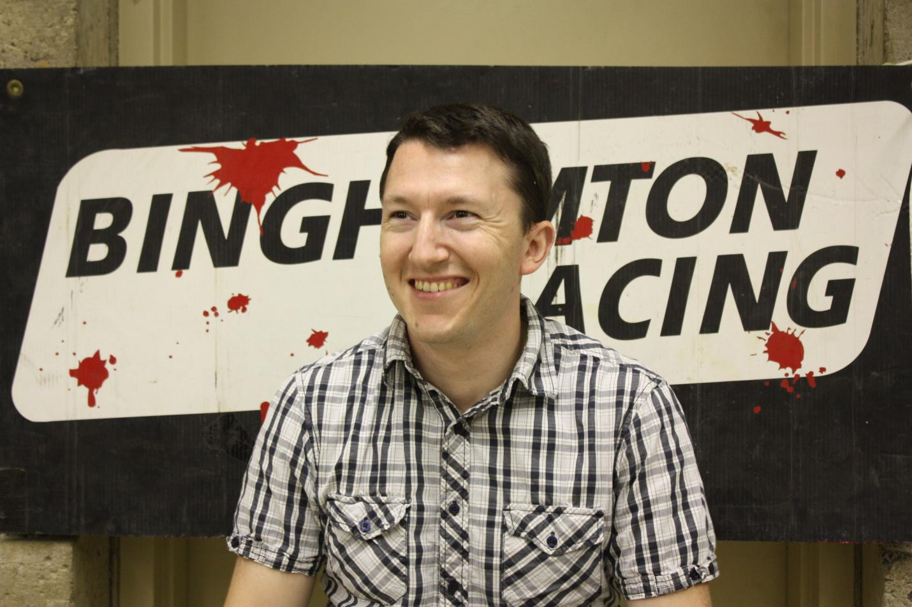
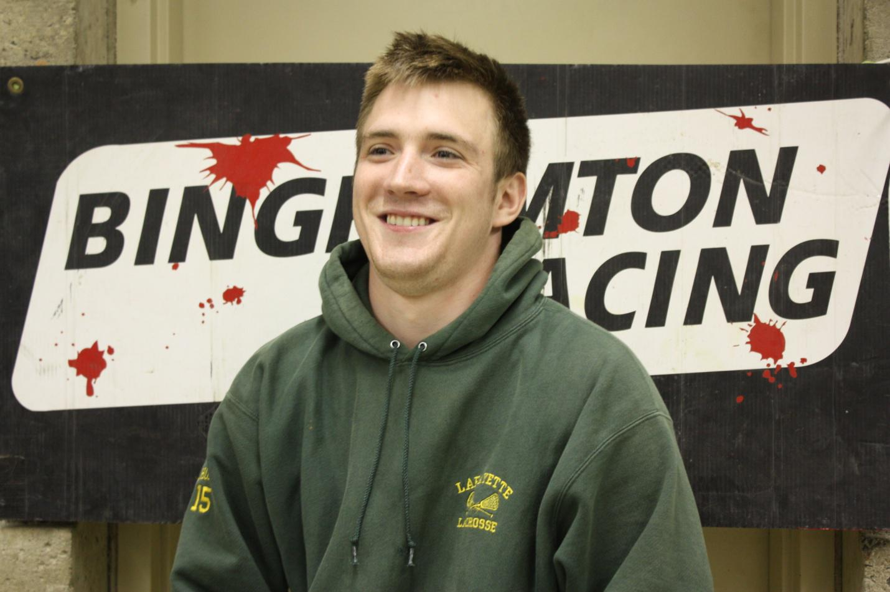
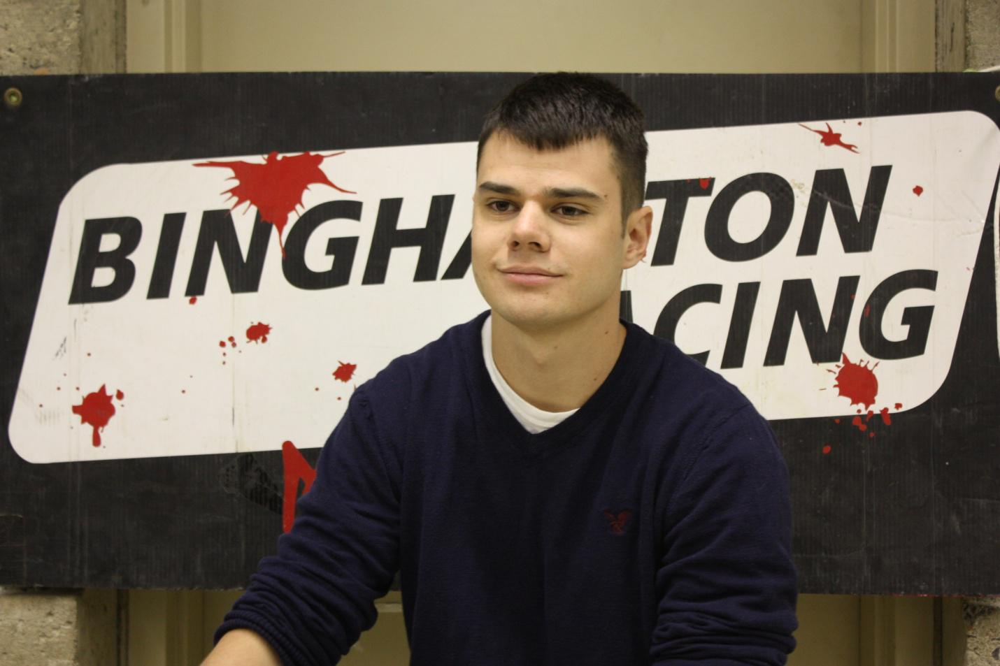

The project is designed by the following seniors
Matthew Rocks
Team Lead
 Major: Mechanical Engineering
Hobbies that aren't classwork: Snowboarding, soccer, motorcycles, fixing vehicles, skeet shooting, home repair.
Why Mini Baja? I spent last year helping out the team with fundraising and some fabrication. I enjoy the work and the experience. I also accept the challenges associated with such a large project and with being the team lead.
Post Grad Plans: I plan to pursue my career in engineering. While starting my career I plan to begin completing my Masters degree at night. I hope to continue in the automotive industry; however I am interested in many others including the nuclear power industry and aerospace.
Kurt Baldauf
Safety and Cockpit Focus Team Lead
 Major: Mechanical Engineering
Hobbies that aren't classwork: Skateboarding, Snowboarding, Cars, and Videogames.
Why Mini Baja? I enjoy working on anything mechanical, especially cars. I also enjoy the challenge of designing and fabricating the parts that are needed in such a project.
Post Grad Plans: Searching for a Masters Program and eventually a job in the Aerospace industry.
Alexander Stanton
Safety and Cockpit Focus Team Lead
 Major: Mechanical Engineering
Hobbies that aren't classwork: Racing, Cars, and World of Warcraft
Why Mini Baja? I spent last year helping out the team with some fabrication and staying involved when possible. I enjoy racing my own vehicles and the auto sports industry.
Post Grad Plans: Begin my career as a mechanical engineer in industry.
Michael Burkus
 Major: Mechanical Engineering
Hobbies that aren't classwork: Music, hiking, motorcycles, biking
Why Mini Baja? I have a high interest in extending my knowledge about automobiles, and can't wait to see the finished, quality vehicle ready for the SAE competition.
Post Grad Plans: Hopefully working in the engineering field with a job I'm happy with.
Evan Engler
 Major: Mechanical Engineering
Hobbies that aren't classwork: Working on cars and renovating houses.
Why Mini Baja? I was interested in learning more about engineering design within the automotive field.
Post Grad Plans: Move my career to the next level by acquiring a challenging and rewarding job in the mechanical engineering field.
Garreth Kaplan
 Major: Mechanical Engineering
Hobbies that aren't classwork: Competitive Weightlifting, Skiing, Travel, and Cooking
Why Mini Baja? I have experience and enjoy working with motor vehicles. I was also looking for a challenge.
Post Grad Plans: I would like to travel around Europe and Asia. Then find a full time job in engineering, and possibly pursue an MBA.
Benjamin Leiter
 Major: Mechanical Engineering
Hobbies that aren't classwork: Mountain Biking, Working on and off-roading my Jeep.
Why Mini Baja? I was interested in the suspension design aspect for future application to my Jeep.
Post Grad Plans: Get a real job!
Keegan Mulholland
 Major: Mechanical Engineering
Hobbies that aren't classwork: Basketball, Football, Lacrosse, Motorsports, Fishing, Skiing
Why Mini Baja? I have always liked working on cars, ATVs, dirt bikes, and go-carts, and am very interested in the automotive industry. I also look forward to the competitive side of the project and optimizing our car for competition.
Post Grad Plans: Complete MBA program and pursue job in engineering and/or management field.
William Wozniak
 Major: Mechanical Engineering
Hobbies that aren't classwork: Building things, soccer, golf, climbing
Why Mini Baja? I was involved last year with the fabrication of the vehicle. I wanted the experience and I accepted the extra challenge associated with the SAE Mini Baja competition.
Post Grad Plans: I am focused on starting my engineering career. I am interested in the automotive industry.